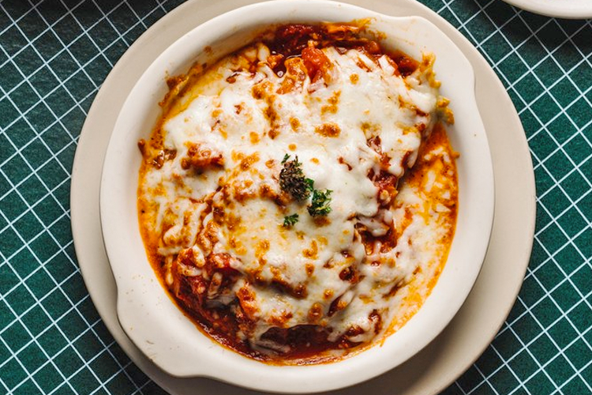

Eggplant Parmesan

Description
This recipe, courtesy of Scalini's Italian Restaurant, will have you wondering if
that's an eggplant in your guest's pocket or if they're just happy to see this
cuisine!
Ingredients
- 3 medium-size eggplants
- 1 cup of flour
- 6 eggs, beaten
- 4 cups fine Italian bread crumbs, seasoned
- olive oil for saute'ing
- 8 cups of Scalini's Marinara Sauce
- 1/2 cup of grated Romano cheese
- 1/2 cup of grated Parmesan cheese
- 1/2 lbs of mozzarella cheese, shredded
- 2 cups of ricotta cheese
Scalini's Marinara Sauce:
- 2 tablespoons of chopped garlic
- 3 tablespoons of olive oil
- 8 cups chopped tomatoes (fresh or canned)
- 1 cup of onions, chopped
- 1/2 cup of fresh parsley, chopped
- 1 teaspoon of oregano
- 1 teaspoon of crushed red pepper
- 1/8 cup of fresh chopped sweet basil
- 1 teaspoon of salt
- 1 teaspoon of black pepper
- 1 pinch of thyme
- 1 pinch of rosemary
Steps
- Prepare the marinara sauce by lightly saute'ing the onions in olive oil in
a large pot for a few minutes. Add garlic and saute' another minute. Add
tomatoes and bring sauce to a boil, then turn heat to low. Add remaining
ingredients, stir, cover and let simmer for one hour, stirring
occasionally.
- Wash the eggplants and slice them into 1/4-inch-thick slices. You may
choose to peel the eggplant before slicing, however you may want to leave
the skin on since the skin contains a lot of vitamins.
- Place the eggplant slices on a layer of paper towels and sprinkle with a
little salt, then cover with another layer of paper towels and hold it down
with something heavy. This will drain the excess moisture. Let set for
about an hour.
- Working with one slice of eggplant at a time, dust with flour, then dip in
beaten eggs and coat well with bread crumbs. Saute' in preheated olive oil
on both sides until golden brown.
- In a baking dish, alternate layers of marinara sauce, eggplant slices,
ricotta, parmesan, and romano cheeses until you fill the baking dish about
an 1/8 inch from the top. Cover with shredded mozzarella cheese and bake for
25 minutes in 375 degree F oven. Let set for 10 minutes before serving.